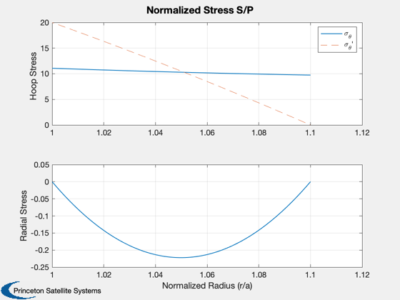

Contents
Axial magnet pancake design script
The alpha and beta shape parameters define the stresses and the fields at the inner magnet wall. For an infinitely long solenoid, Ba=B0 and Bb=0.
%-------------------------------------------------------------------------- % See also Bpancake, CoilStressSolenoid, MagneticPressure, PancakeMagnetMass %-------------------------------------------------------------------------- %-------------------------------------------------------------------------- % Copyright (c) 2018 Princeton Satellite Systems, Inc. % All rights reserved. % STTR NNX17CC74P %--------------------------------------------------------------------------
Magnet parameters
Ri = 0.5; Ro = 0.55; H = 0.1; Nt = 4*2000; Iop = 200; B0 = 2; % T d = SuperconductorDataStructure('HTS'); [mass,Nt,height,width] = PancakeMagnetMass( B0, Ri, [], Iop, d ); [Bc,alpha,beta] = Bpancake(Iop,Ri,Ri+height,Nt,width); K = 2.5; % guess from alpha/beta B0max = K*B0; % Stress for an infinite solenoid sigma = CoilStressSolenoid( Ri, Ro, true ); % pressure: assume 6 T betaM = 1; bPeak = 6; p = MagneticPressure( betaM, bPeak ); sigmaMax = sigma(1)*p; Ndp = 2;
Results
fprintf('\nAxial Magnets:\n'); fprintf('Central Field:\t%g T\n',B0); fprintf('Max Field:\t%g T\n',B0max); fprintf('Max Hoop Stress: %g MPa\n',sigmaMax*1e-6); fprintf('Mass: %g kg, Turns: %d\n',mass,Nt); fprintf('Height: %g cm, width: %g cm\n',height*100,width*100); %--------------------------------------
Axial Magnets: Central Field: 2 T Max Field: 5 T Max Hoop Stress: 158.629 MPa Mass: 137.807 kg, Turns: 8532 Height: 7.11 cm, width: 7.2 cm